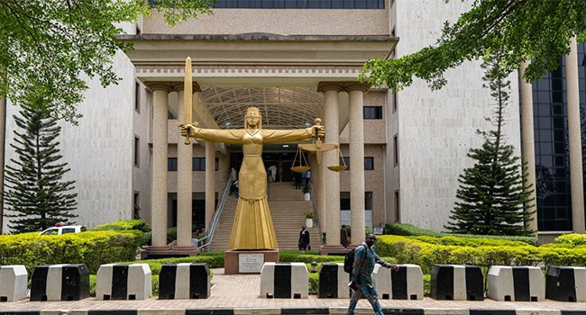

Alleged Terrorism Financing: Court Fixes Jan 2027 For Judgment In Case Against Mamu

A Federal High Court in Abuja has set January 27, 2027, for judgment in the Federal Government’s case against Tukur Mamu, who is accused of financing terrorism. Justice Mohammed Umar fixed the date after lawyers for both sides adopted their final written addresses and presented their arguments.
Mamu was initially charged with 10 counts related to terrorism financing. The prosecution later amended the charges to include additional alleged offences, including possession of firearms without a valid licence and money laundering. Mamu was arrested by Egyptian security officials at Cairo International Airport on September 7, 2022.
At the hearing, defence counsel Johnson Usman argued that the prosecution had not produced in court the licence for a rifle allegedly recovered from Mamu’s residence. He said the defence had requested the licence on three occasions and maintained that it was not expired when Mamu was arrested. Usman said the prosecution’s failure to produce it raised doubts and urged the court to resolve the matter in his client’s favour.
Federal Government lawyer David Kaswe disputed that account, saying the rifle and its licence had already been tendered as evidence. He also recalled that the court had approved the prosecution’s request to keep the rifle and other exhibits in a secure place. Kaswe adopted the government’s final written address, dated September 18 and filed on September 21.
Usman also thanked the Department of State Services for allowing Mamu’s family to see him in accordance with a court order. After hearing both sides, Justice Umar set the date for judgment.
Source: Channels TV